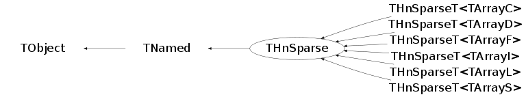
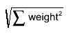

class THnSparse: public TNamed
Efficient multidimensional histogram.
Use a THnSparse instead of TH1 / TH2 / TH3 / array for histogramming when
only a small fraction of bins is filled. A 10-dimensional histogram with 10
bins per dimension has 10^10 bins; in a naive implementation this will not
fit in memory. THnSparse only allocates memory for the bins that have
non-zero bin content instead, drastically reducing both the memory usage
and the access time.
To construct a THnSparse object you must use one of its templated, derived
classes:
THnSparseD (typedef for THnSparse<ArrayD>): bin content held by a Double_t,
THnSparseF (typedef for THnSparse<ArrayF>): bin content held by a Float_t,
THnSparseL (typedef for THnSparse<ArrayL>): bin content held by a Long_t,
THnSparseI (typedef for THnSparse<ArrayI>): bin content held by an Int_t,
THnSparseS (typedef for THnSparse<ArrayS>): bin content held by a Short_t,
THnSparseC (typedef for THnSparse<ArrayC>): bin content held by a Char_t,
They take name and title, the number of dimensions, and for each dimension
the number of bins, the minimal, and the maximal value on the dimension's
axis. A TH2 h("h","h",10, 0., 10., 20, -5., 5.) would correspond to
Int_t bins[2] = {10, 20};
Double_t xmin[2] = {0., -5.};
Double_t xmax[2] = {10., 5.};
THnSparse hs("hs", "hs", 2, bins, min, max);
* Filling
A THnSparse is filled just like a regular histogram, using
THnSparse::Fill(x, weight), where x is a n-dimensional Double_t value.
To take errors into account, Sumw2() must be called before filling the
histogram.
Bins are allocated as needed; the status of the allocation can be observed
by GetSparseFractionBins(), GetSparseFractionMem().
* Fast Bin Content Access
When iterating over a THnSparse one should only look at filled bins to save
processing time. The number of filled bins is returned by
THnSparse::GetNbins(); the bin content for each (linear) bin number can
be retrieved by THnSparse::GetBinContent(linidx, (Int_t*)coord).
After the call, coord will contain the bin coordinate of each axis for the bin
with linear index linidx. A possible call would be
cout << hs.GetBinContent(0, coord);
cout <<" is the content of bin [x = " << coord[0] "
<< " | y = " << coord[1] << "]" << endl;
* Efficiency
TH1 and TH2 are generally faster than THnSparse for one and two dimensional
distributions. THnSparse becomes competitive for a sparsely filled TH3
with large numbers of bins per dimension. The tutorial hist/sparsehist.C
shows the turning point. On a AMD64 with 8GB memory, THnSparse "wins"
starting with a TH3 with 30 bins per dimension. Using a THnSparse for a
one-dimensional histogram is only reasonable if it has a huge number of bins.
* Projections
The dimensionality of a THnSparse can be reduced by projecting it to
1, 2, 3, or n dimensions, which can be represented by a TH1, TH2, TH3, or
a THnSparse. See the Projection() members. To only project parts of the
histogram, call
THnSparse::GetAxis(12)->SetRange(from_bin, to_bin);
See the important remark in THnSparse::IsInRange() when excluding under-
and overflow bins!
* Internal Representation
An entry for a filled bin consists of its n-dimensional coordinates and
its bin content. The coordinates are compacted to use as few bits as
possible; e.g. a histogram with 10 bins in x and 20 bins in y will only
use 4 bits for the x representation and 5 bits for the y representation.
This is handled by the internal class THnSparseCompactBinCoord.
Bin data (content and coordinates) are allocated in chunks of size
fChunkSize; this parameter can be set when constructing a THnSparse. Each
chunk is represented by an object of class THnSparseArrayChunk.
Translation from an n-dimensional bin coordinate to the linear index within
the chunks is done by GetBin(). It creates a hash from the compacted bin
coordinates (the hash of a bin coordinate is the compacted coordinate itself
if it takes less than 8 bytes, the size of a Long64_t.
This hash is used to lookup the linear index in the TExMap member fBins;
the coordinates of the entry fBins points to is compared to the coordinates
passed to GetBin(). If they do not match, these two coordinates have the same
hash - which is extremely unlikely but (for the case where the compact bin
coordinates are larger than 4 bytes) possible. In this case, fBinsContinued
contains a chain of linear indexes with the same hash. Iterating through this
chain and comparing each bin coordinates with the one passed to GetBin() will
retrieve the matching bin.
Function Members (Methods)
This is an abstract class, constructors will not be documented.
Look at the header to check for available constructors.
public:
| virtual | ~THnSparse() |
| void | TObject::AbstractMethod(const char* method) const |
| void | Add(const THnSparse* h, Double_t c = 1.) |
| void | AddBinContent(const Int_t* x, Double_t v = 1.) |
| void | AddBinContent(Long64_t bin, Double_t v = 1.) |
| virtual void | TObject::AppendPad(Option_t* option = "") |
| virtual void | Browse(TBrowser* b) |
| void | CalculateErrors(Bool_t calc = kTRUE) |
| static TClass* | Class() |
| virtual const char* | TObject::ClassName() const |
| virtual void | TNamed::Clear(Option_t* option = "") |
| virtual TObject* | TNamed::Clone(const char* newname = "") const |
| virtual Int_t | TNamed::Compare(const TObject* obj) const |
| Double_t | ComputeIntegral() |
| virtual void | TNamed::Copy(TObject& named) const |
| static THnSparse* | CreateSparse(const char* name, const char* title, const TH1* h1, Int_t ChunkSize = 1024*16) |
| virtual void | TObject::Delete(Option_t* option = "")MENU |
| virtual Int_t | TObject::DistancetoPrimitive(Int_t px, Int_t py) |
| void | Divide(const THnSparse* h) |
| void | Divide(const THnSparse* h1, const THnSparse* h2, Double_t c1 = 1., Double_t c2 = 1., Option_t* option = "") |
| virtual void | TObject::Draw(Option_t* option = "") |
| virtual void | TObject::DrawClass() constMENU |
| virtual TObject* | TObject::DrawClone(Option_t* option = "") constMENU |
| virtual void | TObject::Dump() constMENU |
| virtual void | TObject::Error(const char* method, const char* msgfmt) const |
| virtual void | TObject::Execute(const char* method, const char* params, Int_t* error = 0) |
| virtual void | TObject::Execute(TMethod* method, TObjArray* params, Int_t* error = 0) |
| virtual void | TObject::ExecuteEvent(Int_t event, Int_t px, Int_t py) |
| virtual void | TObject::Fatal(const char* method, const char* msgfmt) const |
| Long64_t | Fill(const Double_t* x, Double_t w = 1.) |
| Long64_t | Fill(const char** name, Double_t w = 1.) |
| virtual void | TNamed::FillBuffer(char*& buffer) |
| virtual TObject* | TObject::FindObject(const char* name) const |
| virtual TObject* | TObject::FindObject(const TObject* obj) const |
| TFitResultPtr | Fit(TF1* f1, Option_t* option = "", Option_t* goption = "") |
| TAxis* | GetAxis(Int_t dim) const |
| Long64_t | GetBin(const Int_t* idx, Bool_t allocate = kTRUE) |
| Long64_t | GetBin(const Double_t* x, Bool_t allocate = kTRUE) |
| Long64_t | GetBin(const char** name, Bool_t allocate = kTRUE) |
| Double_t | GetBinContent(const Int_t* idx) const |
| Double_t | GetBinContent(Long64_t bin, Int_t* idx = 0) const |
| Double_t | GetBinError(const Int_t* idx) const |
| Double_t | GetBinError(Long64_t linidx) const |
| Bool_t | GetCalculateErrors() const |
| virtual Option_t* | TObject::GetDrawOption() const |
| static Long_t | TObject::GetDtorOnly() |
| Double_t | GetEntries() const |
| virtual const char* | TObject::GetIconName() const |
| TObjArray* | GetListOfAxes() |
| TList* | GetListOfFunctions() |
| virtual const char* | TNamed::GetName() const |
| Long64_t | GetNbins() const |
| Int_t | GetNChunks() const |
| Int_t | GetNdimensions() const |
| virtual char* | TObject::GetObjectInfo(Int_t px, Int_t py) const |
| static Bool_t | TObject::GetObjectStat() |
| virtual Option_t* | TObject::GetOption() const |
| void | GetRandom(Double_t* rand, Bool_t subBinRandom = kTRUE) |
| Double_t | GetSparseFractionBins() const |
| Double_t | GetSparseFractionMem() const |
| Double_t | GetSumw() const |
| Double_t | GetSumw2() const |
| Double_t | GetSumwx(Int_t dim) const |
| Double_t | GetSumwx2(Int_t dim) const |
| virtual const char* | TNamed::GetTitle() const |
| virtual UInt_t | TObject::GetUniqueID() const |
| Double_t | GetWeightSum() const |
| virtual Bool_t | TObject::HandleTimer(TTimer* timer) |
| virtual ULong_t | TNamed::Hash() const |
| virtual void | TObject::Info(const char* method, const char* msgfmt) const |
| virtual Bool_t | TObject::InheritsFrom(const char* classname) const |
| virtual Bool_t | TObject::InheritsFrom(const TClass* cl) const |
| virtual void | TObject::Inspect() constMENU |
| void | TObject::InvertBit(UInt_t f) |
| virtual TClass* | IsA() const |
| virtual Bool_t | TObject::IsEqual(const TObject* obj) const |
| virtual Bool_t | IsFolder() const |
| Bool_t | TObject::IsOnHeap() const |
| virtual Bool_t | TNamed::IsSortable() const |
| Bool_t | TObject::IsZombie() const |
| virtual void | TNamed::ls(Option_t* option = "") const |
| void | TObject::MayNotUse(const char* method) const |
| Long64_t | Merge(TCollection* list) |
| void | Multiply(const THnSparse* h) |
| void | Multiply(TF1* f, Double_t c = 1.) |
| virtual Bool_t | TObject::Notify() |
| void | TObject::Obsolete(const char* method, const char* asOfVers, const char* removedFromVers) const |
| static void | TObject::operator delete(void* ptr) |
| static void | TObject::operator delete(void* ptr, void* vp) |
| static void | TObject::operator delete[](void* ptr) |
| static void | TObject::operator delete[](void* ptr, void* vp) |
| void* | TObject::operator new(size_t sz) |
| void* | TObject::operator new(size_t sz, void* vp) |
| void* | TObject::operator new[](size_t sz) |
| void* | TObject::operator new[](size_t sz, void* vp) |
| virtual void | TObject::Paint(Option_t* option = "") |
| virtual void | TObject::Pop() |
| virtual void | Print(Option_t* option = "") const |
| void | PrintBin(Int_t* coord, Option_t* options) const |
| void | PrintBin(Long64_t idx, Option_t* options) const |
| void | PrintEntries(Long64_t from = 0, Long64_t howmany = -1, Option_t* options = 0) const |
| TH1D* | Projection(Int_t xDim, Option_t* option = "") const |
| TH2D* | Projection(Int_t yDim, Int_t xDim, Option_t* option = "") const |
| THnSparse* | Projection(Int_t ndim, const Int_t* dim, Option_t* option = "") const |
| TH3D* | Projection(Int_t xDim, Int_t yDim, Int_t zDim, Option_t* option = "") const |
| virtual Int_t | TObject::Read(const char* name) |
| THnSparse* | Rebin(Int_t group) const |
| THnSparse* | Rebin(const Int_t* group) const |
| void | RebinnedAdd(const THnSparse* h, Double_t c = 1.) |
| virtual void | TObject::RecursiveRemove(TObject* obj) |
| void | Reset(Option_t* option = "") |
| void | TObject::ResetBit(UInt_t f) |
| virtual void | TObject::SaveAs(const char* filename = "", Option_t* option = "") constMENU |
| virtual void | TObject::SavePrimitive(ostream& out, Option_t* option = "") |
| void | Scale(Double_t c) |
| void | SetBinContent(const Int_t* x, Double_t v) |
| void | SetBinContent(Long64_t bin, Double_t v) |
| void | SetBinEdges(Int_t idim, const Double_t* bins) |
| void | SetBinError(const Int_t* x, Double_t e) |
| void | SetBinError(Long64_t bin, Double_t e) |
| void | TObject::SetBit(UInt_t f) |
| void | TObject::SetBit(UInt_t f, Bool_t set) |
| virtual void | TObject::SetDrawOption(Option_t* option = "")MENU |
| static void | TObject::SetDtorOnly(void* obj) |
| void | SetEntries(Double_t entries) |
| virtual void | TNamed::SetName(const char* name)MENU |
| virtual void | TNamed::SetNameTitle(const char* name, const char* title) |
| static void | TObject::SetObjectStat(Bool_t stat) |
| virtual void | SetTitle(const char* title) |
| virtual void | TObject::SetUniqueID(UInt_t uid) |
| virtual void | ShowMembers(TMemberInspector& insp) |
| virtual Int_t | TNamed::Sizeof() const |
| virtual void | Streamer(TBuffer& b) |
| void | StreamerNVirtual(TBuffer& b) |
| void | Sumw2() |
| virtual void | TObject::SysError(const char* method, const char* msgfmt) const |
| Bool_t | TObject::TestBit(UInt_t f) const |
| Int_t | TObject::TestBits(UInt_t f) const |
| virtual void | TObject::UseCurrentStyle() |
| virtual void | TObject::Warning(const char* method, const char* msgfmt) const |
| virtual Int_t | TObject::Write(const char* name = 0, Int_t option = 0, Int_t bufsize = 0) |
| virtual Int_t | TObject::Write(const char* name = 0, Int_t option = 0, Int_t bufsize = 0) const |
protected:
| THnSparseArrayChunk* | AddChunk() |
| void | AddInternal(const THnSparse* h, Double_t c, Bool_t rebinned) |
| Bool_t | CheckConsistency(const THnSparse* h, const char* tag) const |
| THnSparse* | CloneEmpty(const char* name, const char* title, const TObjArray* axes, Int_t chunksize, Bool_t keepTargetAxis) const |
| TH1* | CreateHist(const char* name, const char* title, const TObjArray* axes, Bool_t keepTargetAxis) const |
| virtual void | TObject::DoError(int level, const char* location, const char* fmt, va_list va) const |
| Long64_t | Fill(Long64_t bin, Double_t w) |
| void | FillExMap() |
| virtual TArray* | GenerateArray() const |
| Long64_t | GetBinIndexForCurrentBin(Bool_t allocate) |
| THnSparseArrayChunk* | GetChunk(Int_t idx) const |
| Int_t | GetChunkSize() const |
| THnSparseCompactBinCoord* | GetCompactCoord() const |
| Bool_t | IsInRange(Int_t* coord) const |
| void | TObject::MakeZombie() |
| Bool_t | PrintBin(Long64_t idx, Int_t* coord, Option_t* options) const |
| TObject* | ProjectionAny(Int_t ndim, const Int_t* dim, Bool_t wantSparse, Option_t* option = "") const |
Data Members
public:
| enum { | kNoInt | |
| kValidInt | ||
| kInvalidInt | ||
| }; | ||
| enum TObject::EStatusBits { | kCanDelete | |
| kMustCleanup | ||
| kObjInCanvas | ||
| kIsReferenced | ||
| kHasUUID | ||
| kCannotPick | ||
| kNoContextMenu | ||
| kInvalidObject | ||
| }; | ||
| enum TObject::[unnamed] { | kIsOnHeap | |
| kNotDeleted | ||
| kZombie | ||
| kBitMask | ||
| kSingleKey | ||
| kOverwrite | ||
| kWriteDelete | ||
| }; |
protected:
| TString | TNamed::fName | object identifier |
| TString | TNamed::fTitle | object title |
private:
| TObjArray | fAxes | axes of the histogram |
| TObjArray | fBinContent | array of THnSparseArrayChunk |
| TExMap | fBins | ! filled bins |
| TExMap | fBinsContinued | ! filled bins for non-unique hashes, containing pairs of (bin index 0, bin index 1) |
| TObjArray | fBrowsables | ! browser-helpers for each axis |
| Int_t | fChunkSize | number of entries for each chunk |
| THnSparseCompactBinCoord* | fCompactCoord | ! compact coordinate |
| Double_t | fEntries | number of entries, spread over chunks |
| Long64_t | fFilledBins | number of filled bins |
| Double_t* | fIntegral | ! array with bin weight sums |
| enum THnSparse:: | fIntegralStatus | ! status of integral |
| Int_t | fNdimensions | number of dimensions |
| Double_t | fTsumw | total sum of weights |
| Double_t | fTsumw2 | total sum of weights squared; -1 if no errors are calculated |
| TArrayD | fTsumwx | total sum of weight*X for each dimension |
| TArrayD | fTsumwx2 | total sum of weight*X*X for each dimension |
Class Charts
{kind=link}
{kind=link}
{kind=link}
{kind=link}

Function documentation
void AddBinContent(const Int_t* x, Double_t v = 1.)
Add "v" to the content of bin with coordinates "coord"
THnSparse* CloneEmpty(const char* name, const char* title, const TObjArray* axes, Int_t chunksize, Bool_t keepTargetAxis) const
TH1* CreateHist(const char* name, const char* title, const TObjArray* axes, Bool_t keepTargetAxis) const
THnSparse* CreateSparse(const char* name, const char* title, const TH1* h1, Int_t ChunkSize = 1024*16)
TFitResultPtr Fit(TF1* f1, Option_t* option = "", Option_t* goption = "")
Fit a THnSparse with function f since the data is sparse by default a likelihood fit is performed merging all the regions with empty bins for betetr performance efficiency Since the THnSparse is not drawn no graphics options are passed Here is the list of possible options = "I" Use integral of function in bin instead of value at bin center = "X" Use chi2 method (default is log-likelihood method) = "U" Use a User specified fitting algorithm (via SetFCN) = "Q" Quiet mode (minimum printing) = "V" Verbose mode (default is between Q and V) = "E" Perform better Errors estimation using Minos technique = "B" Use this option when you want to fix one or more parameters and the fitting function is like "gaus", "expo", "poln", "landau". = "M" More. Improve fit results = "R" Use the Range specified in the function range
Long64_t GetBin(const Double_t* x, Bool_t allocate = kTRUE)
Get the bin index for the n dimensional tuple x, allocate one if it doesn't exist yet and "allocate" is true.
Long64_t GetBin(const char* name[], Bool_t allocate /* = kTRUE */)
Get the bin index for the n dimensional tuple addressed by "name", allocate one if it doesn't exist yet and "allocate" is true.
Long64_t GetBin(const Int_t* idx, Bool_t allocate = kTRUE)
Get the bin index for the n dimensional coordinates coord, allocate one if it doesn't exist yet and "allocate" is true.
Double_t GetBinContent(Long64_t bin, Int_t* idx = 0) const
Return the content of the filled bin number "idx".
If coord is non-null, it will contain the bin's coordinates for each axis
that correspond to the bin.
Double_t GetBinError(const Int_t* idx) const
Get error of bin with coordinates "coord" as  If errors are not enabled (via Sumw2() or CalculateErrors()) return sqrt(contents).
Double_t GetBinError(Long64_t linidx) const
Get error of bin addressed by linidx asIf errors are not enabled (via Sumw2() or CalculateErrors()) return sqrt(contents).
Long64_t GetBinIndexForCurrentBin(Bool_t allocate)
Return the index for fCurrentBinIndex. If it doesn't exist then return -1, or allocate a new bin if allocate is set
void GetRandom(Double_t* rand, Bool_t subBinRandom = kTRUE)
Generate an n-dimensional random tuple based on the histogrammed distribution. If subBinRandom, the returned tuple will be additionally randomly distributed within the randomized bin, using a flat distribution.
Double_t GetSparseFractionMem() const
Return the amount of used memory over memory that would be used by a non-sparse n-dimensional histogram. The value is approximate.
Bool_t IsInRange(Int_t* coord) const
Check whether bin coord is in range, as defined by TAxis::SetRange(). Currently, TAxis::SetRange() does not allow to select all but over- and underflow bins (it instead resets the axis to "no range selected"). Instead, simply call TAxis* axis12 = hsparse.GetAxis(12); axis12->SetRange(1, axis12->GetNbins()); axis12->SetBit(TAxis::kAxisRange); to deselect the under- and overflow bins in the 12th dimension.
TH1D* Projection(Int_t xDim, Option_t* option = "") const
Project all bins into a 1-dimensional histogram, keeping only axis "xDim". If "option" contains "E" errors will be calculated. "A" ranges of the taget axes will be ignored. "O" original axis range of the taget axes will be kept, but only bins inside the selected range will be filled.
TH2D* Projection(Int_t yDim, Int_t xDim, Option_t* option = "") const
Project all bins into a 2-dimensional histogram, keeping only axes "xDim" and "yDim". WARNING: just like TH3::Project3D("yx") and TTree::Draw("y:x"), Projection(y,x) uses the first argument to define the y-axis and the second for the x-axis! If "option" contains "E" errors will be calculated. "A" ranges of the taget axes will be ignored.
TH3D* Projection(Int_t xDim, Int_t yDim, Int_t zDim, Option_t* option = "") const
Project all bins into a 3-dimensional histogram, keeping only axes "xDim", "yDim", and "zDim". If "option" contains "E" errors will be calculated. "A" ranges of the taget axes will be ignored. "O" original axis range of the taget axes will be kept, but only bins inside the selected range will be filled.
THnSparse* Projection(Int_t ndim, const Int_t* dim, Option_t* option = "") const
Project all bins into a ndim-dimensional THnSparse histogram, keeping only axes in dim (specifying ndim dimensions) If "option" contains "E" errors will be calculated. "A" ranges of the taget axes will be ignored. "O" original axis range of the taget axes will be kept, but only bins inside the selected range will be filled.
TObject* ProjectionAny(Int_t ndim, const Int_t* dim, Bool_t wantSparse, Option_t* option = "") const
Project all bins into a ndim-dimensional THnSparse histogram, keeping only axes in dim (specifying ndim dimensions) If "option" contains "E" errors will be calculated. "A" ranges of the taget axes will be ignored. "O" original axis range of the taget axes will be kept, but only bins inside the selected range will be filled.
void Scale(Double_t c)
Scale contents and errors of this histogram by c: this = this * c It does not modify the histogram's number of entries.
void AddInternal(const THnSparse* h, Double_t c, Bool_t rebinned)
void RebinnedAdd(const THnSparse* h, Double_t c = 1.)
Add contents of h scaled by c to this histogram: this = this + c * h Note that if h has Sumw2 set, Sumw2 is automatically called for this if not already set. In contrast to Add(), RebinnedAdd() does not require consist binning of this and h; instead, each bin's center is used to determine the target bin.
Long64_t Merge(TCollection* list)
Merge this with a list of THnSparses. All THnSparses provided in the list must have the same bin layout!
void Multiply(TF1* f, Double_t c = 1.)
Performs the operation: this = this*c*f1 if errors are defined, errors are also recalculated. Only bins inside the function range are recomputed. IMPORTANT NOTE: If you intend to use the errors of this histogram later you should call Sumw2 before making this operation. This is particularly important if you fit the histogram after THnSparse::Multiply
void Divide(const THnSparse* h1, const THnSparse* h2, Double_t c1 = 1., Double_t c2 = 1., Option_t* option = "")
Replace contents of this histogram by multiplication of h1 by h2 this = (c1*h1)/(c2*h2) Note that if h1 or h2 have Sumw2 set, Sumw2 is automatically called for this if not already set. The resulting errors are calculated assuming uncorrelated content. However, if option ="B" is specified, Binomial errors are computed. In this case c1 and c2 do not make real sense and they are ignored.
Bool_t CheckConsistency(const THnSparse* h, const char* tag) const
Consistency check on (some of) the parameters of two histograms (for operations).
void SetBinEdges(Int_t idim, const Double_t* bins)
Set the axis # of bins and bin limits on dimension idim
void SetBinError(const Int_t* x, Double_t e)
Set error of bin with coordinates "coord" to "e", enable errors if needed
void SetBinError(Long64_t bin, Double_t e)
Set error of bin with index "bin" to "e", enable errors if needed
THnSparse* Rebin(Int_t group) const
Combine the content of "group" neighboring bins into a new bin and return the resulting THnSparse. For group=2 and a 3 dimensional histogram, all "blocks" of 2*2*2 bins will be put into a bin.
void SetTitle(const char* title)
Change (i.e. set) the title. If title is in the form "stringt;string0;string1;string2 ..." the histogram title is set to stringt, the title of axis0 to string0, of axis1 to string1, of axis2 to string2, etc, just like it is done for TH1/TH2/TH3. To insert the character ";" in one of the titles, one should use "#;" or "#semicolon".
THnSparse* Rebin(const Int_t* group) const
Combine the content of "group" neighboring bins for each dimension into a new bin and return the resulting THnSparse. For group={2,1,1} and a 3 dimensional histogram, pairs of x-bins will be grouped.
Bool_t PrintBin(Long64_t idx, Int_t* coord, Option_t* options) const
Print one bin. If "idx" is != -1 use that to determine the bin, otherwise (if "idx" == -1) use the coordinate in "bin". If "options" contains: '0': only print bins with an error or content != 0 Return whether the bin was printed (depends on options)
void PrintEntries(Long64_t from = 0, Long64_t howmany = -1, Option_t* options = 0) const
Print "howmany" entries starting at "from". If "howmany" is -1, print all. If "options" contains: 'x': print in the order of axis bins, i.e. (0,0,...,0), (0,0,...,1),... '0': only print bins with content != 0
void Print(Option_t* option = "") const
Print a THnSparse. If "option" contains: 'a': print axis details 'm': print memory usage 's': print statistics 'c': print its content, too (this can generate a LOT of output!) Other options are forwarded to PrintEntries().
THnSparseArrayChunk* GetChunk(Int_t idx) const
TArray* GenerateArray() const
Long64_t Fill(Long64_t bin, Double_t w)
Increment the bin content of "bin" by "w", return the bin index.